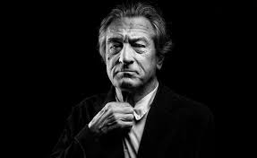

Роберт-Де Ниро С Мартином Скорсезе
на сьемках фильма Таксист
Роберт-Де Ниро на Канском Кинофестивале
Молодой Роберт-ДеНиро в фильме Крестный Отец 2
К слову этот фильм стал звездным для актера
Ро́берт Э́нтони Де Ни́ро-мла́дший (англ. Robert Anthony De Niro, Jr.; род. 17 августа 1943, Гринвич-Виллидж, Нью-Йорк)
— американский актёр, продюсер и режиссёр. Наиболее известен своей работой в криминальных фильмах, триллерах и сотрудничеством с режиссёром Мартином Скорсезе.
Обладатель премий «Золотой глобус» (1981, 2011) и «Оскар» (1975, 1981).
